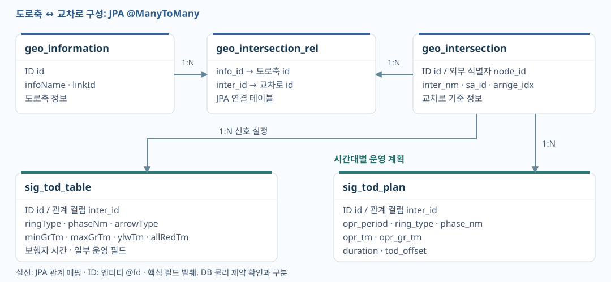
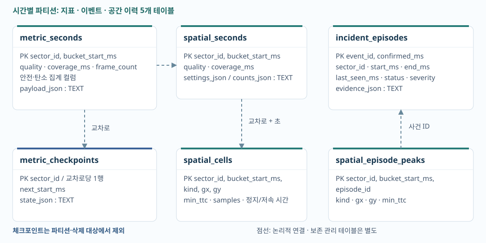
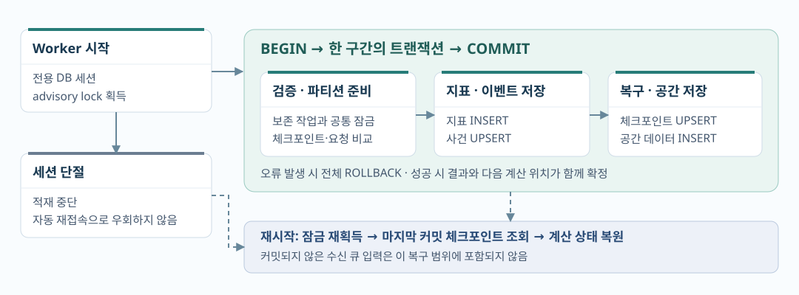

교차로를 도로축마다 복제하지 않도록
geo_information과 geo_intersection을 연결 테이블로 분리했습니다. 같은 교차로를 여러 도로축에서 참조할 수 있고, 교차로 정보와 소속 관계의 변경 범위가 나뉩니다.
DATA MODELING · INTEGRITY · OPERATIONS
교통신호 최적화와 V2X 수집 시스템에서 데이터의 식별 기준과 저장 단위, 복구와 보존 정책을 설계했습니다. 업무 요구사항이 테이블 구조와 운영 규칙으로 이어지는 과정을 정리했습니다.
TWO DESIGN CASES
도로축·교차로·신호 계획의 관계를 모델링하고, 학습 모델과 실행 결과를 분리했습니다. 같은 실행의 재생 데이터와 분석 결과를 연결하는 기준을 정했습니다.
CASE 02 / 관측·시간 단위초 단위 관측과 여러 초에 걸친 위험 사건을 구분했습니다. 수집 품질을 지표와 함께 기록하고, 저장·재시작·이력 정리가 같은 기준으로 동작하도록 구성했습니다.
구현 내용은 엔티티·SQL·저장 및 조회 코드에 근거합니다. 아직 적용하지 않은 내용은 ‘개선안’으로 표시했습니다.
문제 정의 · 요구사항 · 관계 모델
도로축에 포함된 교차로를 조회하고, 교차로별 신호 설정과 시간대별 운영 계획을 조합해야 했습니다. 교차로의 소속 관계와 신호의 식별 기준을 먼저 나누어 모델링했습니다.

geo_information과 geo_intersection을 연결 테이블로 분리했습니다. 같은 교차로를 여러 도로축에서 참조할 수 있고, 교차로 정보와 소속 관계의 변경 범위가 나뉩니다.
교차로의 내부 id는 엔티티 연결에, node_id는 시뮬레이터 식별과 조회에 사용했습니다. 신호 설정과 시간대별 계획도 분리하되, 양쪽에 남은 운영 필드는 기준을 정할 필요가 있습니다.
교차로와 운영 시간대를 고른 뒤 Ring + Phase로 조회 키를 구성했습니다. A-1과 B-1을 구분해 같은 현시 번호의 운영 시간이 섞이지 않도록 했습니다. 이 키는 애플리케이션의 조회 기준입니다.
실행 이력 · 적재 흐름 · 저장 방식
하나의 학습 모델로 조건을 바꿔 여러 번 실행할 수 있어 모델과 실행 이력을 분리했습니다. 실행 ID와 작업 UUID를 통해 기준안·최적화안의 재생 데이터와 분석 결과를 찾도록 구성했습니다.

모델 ID, 교통량 파일,
요일·시간대 선택
실행 행 저장 후 Python 요청
응답의 작업 UUID 갱신
재생 NDJSON → COPY
분석 지표 → 공통 테이블
동일 시점 비교 재생
분석 API·Excel 보고서
| 구분 | 저장 방식 | 선택 이유와 비용 |
|---|---|---|
| 차량 재생 | 실행별 테이블sim_time + JSONB | 한 시점의 차량 상태를 묶어 조회하는 용도에 맞췄습니다. 차량별 조건 검색은 별도 구조·인덱스 검토가 필요합니다. |
| 비교 분석 | 교차로·15분·신호별 공통 분석 테이블 | 계산된 지표를 컬럼으로 조회합니다. 재생 JSON을 다시 펼치지 않고 보고서를 만들지만 결과 간 정합성을 관리해야 합니다. |
트랜잭션 경계 실행 등록, 비동기 응답 반영, Python 결과 저장은 별도 단계입니다. Java의 @Transactional만으로 외부 작업 전체가 함께 확정되지는 않습니다.
트레이드오프 · 검증 기준 · 회고
구현된 구조는 모델별 실행 이력 조회, 실행 UUID에 따른 분석 결과 연결, 기준안·최적화안의 시점 재생을 지원합니다. 이 구조를 확장할 때는 테이블 수, 업무 키 중복, 외부 작업 실패를 함께 다뤄야 합니다.
| 판단 항목 | 현재 구조 | 대안과 전환 기준 |
|---|---|---|
| 도로축 소속 | 교차로와 연결 테이블로 분리 기준 정보의 중복을 줄이는 대신 조인이 필요 | 도로축 행에 교차로 목록을 넣으면 단순하지만 개별 교차로의 속성·관계 관리가 어려워짐 |
| 재생 데이터 | 시점별 차량 상태를 JSONB로 저장 프레임 조회에 맞고 차량별 분석은 불리 | 차량·시점별 행으로 분리 차량 궤적이나 속성 검색이 주요 요구가 될 때 검토 |
| 실행별 결과 | base_UUID / optimum_UUID테이블 단위 정리가 가능하지만 실행마다 테이블 증가 | 공통 테이블의 run_id, variant, sim_time실행 수 증가 시 조회·삭제 비용과 관리 부담을 비교 |
| 현재 코드에서 확인한 경계 | 보완·검증 기준 |
|---|---|
| 업무 키 중복 Ring-Phase가 중복되면 먼저 읽은 값을 사용 | 기존 중복을 점검하고 교차로·시간대·Ring·Phase의 유일성 규칙을 정의합니다. 계획 버전 도입 시 버전도 키에 포함합니다. |
| 교차로 연결 기준 일부 분석은 이름, 일부는 node_id로 조인 | 외부 교차로 ID의 매핑 기준을 통일하고 미매핑·중복 매핑 건수를 확인합니다. 이름은 표시 용도로 분리합니다. |
| 조회 경로와 인덱스 코드의 결과 생성 DDL에 조회용 인덱스 미정의 | 운영 인덱스와 실행 계획을 확인합니다. 재생의 sim_time, 분석의 opt_uuid와 정렬 컬럼을 후보로 읽기·쓰기 비용을 비교합니다. |
| 외부 요청·삭제 실패 비동기 실패는 로그 중심, 삭제는 서버 간 별도 처리 | 요청·실행·실패·삭제 상태와 재시도 키를 영속화하고, 단계별 완료 여부를 확인해 남은 작업을 재처리합니다. 동적 식별자는 UUID 형식도 검증합니다. |
신호 계획의 버전·유효기간과 실행 당시 입력 조건을 연결하고, 시간대 코드·지표 단위의 정의를 정리하겠습니다. 현재 저장된 모델·실행 메타데이터만으로 변경 전 신호 계획까지 재현된다고 보기는 어렵습니다.
그다음 공통 결과 스키마와 실패 재처리 구조를 검토하겠습니다. 성능 개선은 운영 DDL과 실행 계획, 대표 데이터의 측정 결과로 판단하겠습니다.
문제 정의 · 요구사항 · 저장 단위
차량 관측으로 안전·탄소·공간 지표를 계산할 때, 수신이 끊긴 구간을 정상적인 0으로 취급하면 지표의 의미가 달라집니다. 관측 품질을 함께 저장하고, 초 단위 지표와 여러 초에 걸친 사건을 나누어 관리했습니다.

| 데이터 | 저장·갱신 기준 | 분리한 이유 |
|---|---|---|
| 관측 지표 | 교차로 × 1초(sector_id, bucket_start_ms) | 교차로별 기간 조회와 중복 행 방지에 같은 기준을 사용합니다. quality·coverage_ms로 수집 상태도 기록합니다. |
| 위험 사건 | 사건 × 확정 시각(event_id, confirmed_ms) | 초마다 새 사건으로 세지 않도록 분리했습니다. 마지막 감지·종료 시각·위험도는 같은 사건 행에 갱신합니다. |
| 복구 상태 | 교차로별 최신 1행sector_id | 다음 계산 위치와 계산 상태를 갱신합니다. 관측 이력을 정리해도 재시작에 필요한 상태는 남깁니다. |
컬럼과 JSON의 역할 주요 집계값은 컬럼으로, 상세 결과와 복원 상태는 JSON 문자열로 저장합니다. 이 프로젝트의 payload_json·state_json 타입은 TEXT이며, 중복 표현의 일관성은 저장 코드가 담당합니다.
파이프라인 · 품질 규칙 · 장애 복구
지표만 저장되거나 체크포인트만 앞서가면 재시작 시 계산 범위가 어긋납니다. 한 구간의 안전·탄소 결과를 모은 뒤 지표·사건·공간 데이터·체크포인트를 하나의 트랜잭션으로 저장했습니다.
타임스탬프 검사
중복·지연 입력 구분
안전·탄소 계산 후 결합
기본 지연 허용 0.5초
한 구간을 함께 COMMIT
성공 후 다음 구간 진행
기간별 지표 보고서
15분 단위 공간 집계

| 품질·실패 상황 | 현재 구현의 처리 규칙 |
|---|---|
| 관측 부족·수신 공백 | 관측 범위가 0이면 missing, 950ms 이상이고 거부 객체가 없으면 complete, 나머지는 partial입니다. 위험이 관측되지 않아도 근거가 부족하면 InsufficientData로 구분합니다. |
| 중복·늦게 도착한 프레임 | 같은 타임스탬프의 중복 입력과 이미 확정한 구간보다 오래된 입력을 제외하고 누적 건수를 기록합니다. 확정된 과거 지표를 늦은 입력으로 덮어쓰지 않습니다. |
| 같은 저장 요청의 재시도 | 최신 체크포인트와 상태·지표 payload·사건 내용이 같으면 성공으로 처리합니다. 오래된 요청이나 다른 내용은 거부하며, 재시도 가능한 DB 오류는 최대 3회 시도합니다. |
한 구간의 커밋을 기다려 계산 상태와 저장 순서를 맞췄습니다. 처리량 확장 시에는 교차로별 Writer 소유권과 체크포인트 범위를 다시 설계해야 합니다.
체크포인트에는 설정·프레임·사건 계산 상태가 들어갑니다. 수신 큐에만 있던 입력은 복구되지 않으므로, 필요 시 보관한 원본 로그를 별도 DB에 재생합니다.
물리 설계 · 보존 정책 · 검증·회고
SQLite에서 PostgreSQL로 저장소를 전환해 운영에 적용했습니다. 계속 쌓이는 교통 이력은 조회 조건에 맞는 키와 인덱스로 찾고, 오래된 데이터는 시간 파티션 단위로 정리하도록 구성했습니다.
10진 GB · DB 전체 용량을 60초마다 확인 · 한 주기 정리 예산 약 20초
| 운영 요구 | 구현한 선택 | 효과와 제약 |
|---|---|---|
| 교차로·기간 조회 | 지표 PK (sector_id, bucket_start_ms)사건 인덱스 (sector_id, confirmed_ms) | 교차로 동등 조건과 시간 범위 조건에 맞춘 구성입니다. 실제 조회 성능은 데이터량과 실행 계획으로 확인해야 합니다. |
| 오래된 이력 정리 | 이력 5개 테이블을 UTC 1시간 단위 RANGE 파티션으로 구성 | 행별 삭제 대신 같은 시간대의 파티션 5개를 함께 삭제합니다. 사건 PK에도 파티션 기준인 확정 시각을 포함했습니다. |
| 저장·삭제 충돌 방지 | 공통 트랜잭션 잠금 삭제 구간을 관리 테이블에 기록 | 진행 중 사건·최신 체크포인트 구간·최신 파티션·현재 이후 구간을 보호합니다. 정리된 시간대는 다시 만들지 않습니다. |
보존 범위 체크포인트는 삭제하지 않습니다. 70GB는 운영 목표이며 보호 중인 데이터 등에 따라 초과할 수 있습니다. WAL·원본 로그·영상은 이 용량 기준에 포함되지 않고, 삭제 전 자동 백업은 없습니다.
7,500초 입력 → 34.25초 처리
합성 입력으로 지표 7,500행을 저장한 기록입니다. RSS 38.3~38.82MB, DB 연결 최대 2개가 기록되어 있습니다. 실제 운영 부하나 전환 전후 개선율을 의미하지 않습니다.
테스트 시나리오 기준이며, 새 실행 결과를 뜻하지 않습니다.
원본 입력의 영속 보관과 재생 위치를 연결해 큐 유실에 대비하겠습니다. 이력 삭제 전 아카이브 여부와 보존 기간을 업무 기준으로 정하고, 조회·적재·DDL 계정의 권한도 분리하겠습니다. 현재 읽기 전용 세션 설정은 계정 권한 분리와는 범위가 다릅니다.